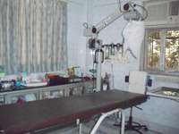

Home > About Clinic
About the Clinic
Mumbai Retina Centre is a high tech diagnostic and therapeutic institute for the treatment of complex retinal disorders.
We have a full array of latest instruments for diagnosis of retinal diseases and fully fledged Operation Theater for surgical facilities.
OPD – Out Patient Set Up
- Heidelberg Retinal Angiogram for Confocal Retinal Imaging in Macular disorders.
- PDT-Photodynamic Therapy with visudyne & Activis PDT Laser, Quantel France.
- ETDRS chart for Visual Acuity measurement.
- Diode Laser - Iridis, Quantel, France for treatment of Diabetic Retinopathy, etc.
- Green Laser NIDEK – Japan for treatment of Retinal disorders
- Ultrasound B-Scan, Sonomed USA
- Diabetic Retinopathy - laser and surgery
- Autorefracometer Tomey Japan
- Slit Lamp – REICHERT Italy
- Lensometer
- Chair Unit System
- Inj. Lucentis (for CNVM)
- Advanced Vitreoretinal centre for complex Vitreoretinal diseases
- Screening for ROP and lasers
Operation Theater set-up
- Carl Zeiss Microscope – from Germany for Micro surgery
- Storz Vitrectomy system for Vitreous Surgery
- Peymann wide angle viewing attachment for vitreous surgery
- BOYLES Apparatus for general anesthesia
- Macular Hole surgery
- Retinal Detachment surgery
- Ocular Trauma surgery
- Surgery for Diabetic Retinopathy
- Surgery for Epiretinal Membranes and Vitreous Haemorrhage